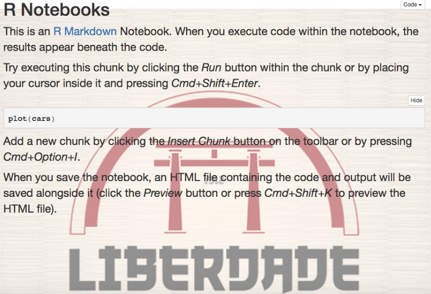

Tips and Tricks for R Markdown html
Here are a couple of little tips and tricks that I’ve picked up for use with RMarkdown html documents (including presentations and notebooks). This post is aimed at the R user who doesn’t know much, if anything, about html and css.
Background images
Sometimes it’s useful (or just nice) to have a background image of some sort in a presentation or notebook. This could be the logo of your university or company, for example. To do this for a R Markdown document, you will need to do three things:
- create a separate .css file,
- have/create an image, made suitably transparent,
- change the YAML in the R Markdown document.
You can create a css file in any text editor. In this example I’m calling it ‘custom.css’. Include these lines (my image is called results.jpg):
body {
background-image: url("results.jpg");
min-height: 500px;
/* Set background image to fixed (don't scroll along with the page) */
background-attachment: fixed;
background-position: right top;
/* Set the background image to no repeat */
background-repeat: no-repeat;
/* Scale the background image to be as large as possible */
background-size: cover;
}The image itself will need to be quite transparent. You can do that with imagemagick. On a mac terminal, to make the image 50% more transparent, the command is:
convert IMAGE -fill white -colorize 50% NEW_IMAGEAfter this, we just need to change our YAML at the top of the R Markdown document like so:
---
title: "R Notebooks"
output:
html_notebook:
css: custom.css
---You’ll have something interesting like this:

This image could of course be anything, like a company logo, for example. You could also leave a large portion of it white to place the image in the corner or side of the screen.
Two columns
Another useful thing that we can do with css is create two columns, particularly useful in a presentation. In order to do that, add the following lines to the css file you’re using:
#left {
left: -8.33%;
text-align: left;
float: left;
width: 50%;
z-index: -10;
}
#right {
left: 31.25%;
top: 75px;
float: right;
text-align: right;
z-index: -10;
width: 50%;
}When you want to use these columns in your R Markdown document, use them like so, with a bit of html:
<div id="left">
#content
</div>
<div id="right">
#content
</div>For example, this code:
<div id="left">
$$y_i \backsim Normal(\mu_i, \sigma)$$
$$\mu_i = \alpha + \beta x_i$$
$$\sigma \backsim Uniform(0, 1)$$
$$\beta \backsim Normal(0, 10)$$
$$\alpha \backsim Normal(0, 10)$$
</div>
<div id="right">
- `Likelihood`
- `Linear model`
- `sigma prior`
- `beta prior`
- `alpha prior`
</div>produces this:
Likewise, an external css file can be used to change defaults. I think the default R code snippet text size is a little small in the R Notebooks, as is all the text in an R Notebook if you’re using them for presentations. You can easily change the defaults by putting:
body {
/* Normal */
font-size: 16px;
}
code.r {
/* Code block */
font-size: 14px;
}in the css file, which will make the normal text and the R code text bigger. If you want to make all the text slightly bigger in the entire document without an external css file, you can just put <font> tags at the start and end of the R Markdown document:
<font size="6">
# content
</font>Similarly, bits of html can come in handy when you want to change little elements of the document. <br> will give you a vertical space, and using <bdi> tags can be useful for changing the style of particular words, especially useful for words that are presented as ‘code’ in back ticks. For example:
<bdi style="color:#1E90FF">`variable_1`</bdi>.
<bdi style="font-size:70%;">(**`?dplyr::select`**)</bdi>will make ‘variable_1’ appear in code-style text and be blue (variable_1), whereas ‘?dplyr::select’ will be bold and 70% of the size that it would otherwise be. ((?dplyr::select))
revealjs logos
The image of the two columns above was part of a revealjs presentation done in R Markdown. revealjs gives you really slick options for presentations, but can be a lot of extra work in terms of customizing the output. Logos, for example, which are so common (and necessary) in presentations, are not included by default and can be tricky and annoying to include.
We can get what we want with a little html and some YAML options. In the example below, I used an external html file called Logo_prefix.html, which is referenced in the includes: section of the YAML header. The html file contains the following, which uses an image called logo.png. The size can be adjusted using the style="" part below.
<!DOCTYPE html>
<html>
<div class="bottombar">
<h1 class="title"></h1><image class="logo" src="logo.png" style="width:180px; height:85px;">
</div>
</html>And the RMarkdown YAML I used (for a course in statistics in R in Portuguese; the Sys.Date() is a nice trick to put the current date on the presentation):
---
title: "Introdução a estatística no `R`, Dia 2"
author: "Robert McDonnell"
date: "`r Sys.Date()`"
output:
revealjs::revealjs_presentation:
theme: sky
highlight: pygments
css: custom.css
includes:
before_body: Logo_prefix.html
---This includes a small logo in the upper right corner of every slide. To get this to work properly, you will need to dig into the css of the particular revealjs theme that you are using (here I’m using sky), I can’t even remember exactly how I did that… like I said, customizing revealjs can be annoying.